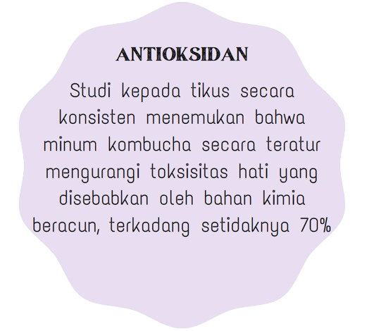
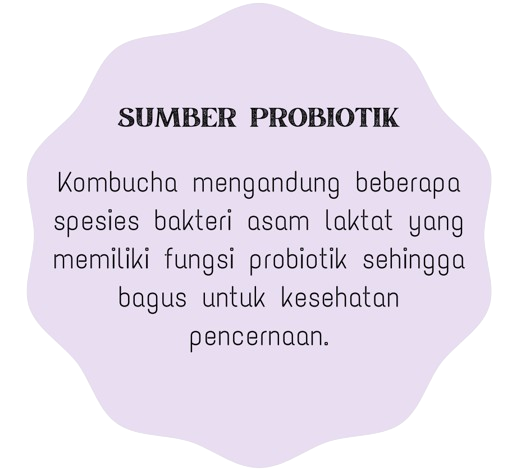
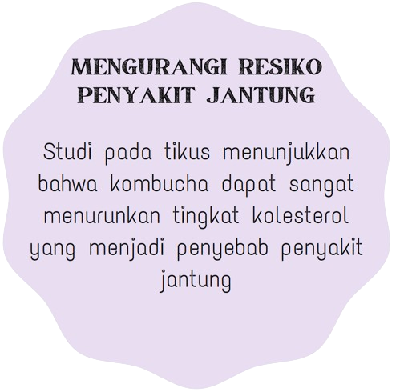

The Benefits
Antioksidan
Sumber Probiotik
Membunuh Bakteri
Mengurangi Resiko Penyakit Jantung




How To Make Kombucha
Kombucha adalah minuman teh yang difermentasi Oleh mikroorganisme berupa bakteri dan juga ragi sehingga memiliki rasa asam, manis, dan juga bersoda. Kombucha dibuat dengan menambahkan starter mikroba kombucha yang dinamakan sebagai SCOBY. Dilansir dari The Harvard Crimson, SCOBY (Symbiotic Colony of Bacteria and Yeast) adalah koloni bakteri dan ragi simbiotik. Mikroorganisme yang berperan dalam pembuatan starter mikroba kombucha tersebut adalah: Bakteri asam asetat seperti Acetobacter dan Gluconacetobackter.
Bakteri asam laktat seperti Lactobacillus. Ragi seperti Saccharomyces, Schizosaccharomyces, Zigosaccharomyces, dan Brettanomyces. SCOBY dimasukkan ke dalam larutan teh dan gula, kemudian akan memakan gula dan memfermentasi teh. Proses fermentasi ini biasanya berlangsung sekitar tujuh hingga sepuluh hari. Fermentasi tersebut menghasilkan kombucha yang mengandung etanol, vitamin, asam amino, dan juga beberapa enzim.
The Benefits
How To Make Kombucha